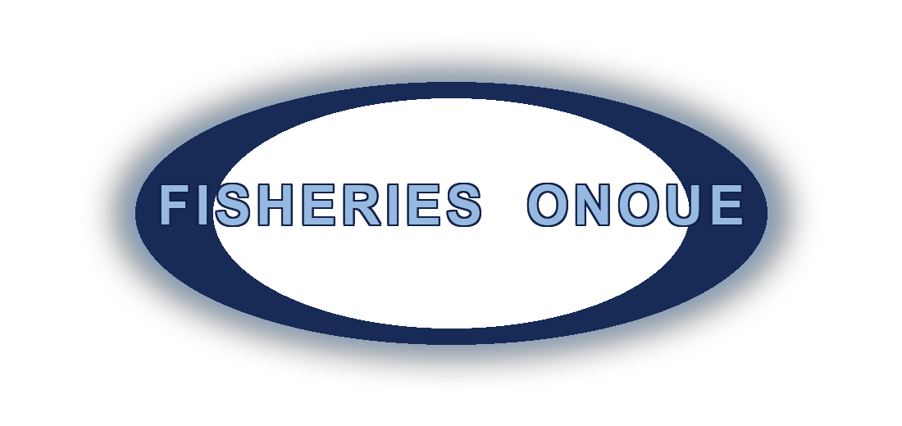

尾上水産 スタッフ
ID（番号）と4桁のPINでログイン
ログイン
IDまたはPINが違います
← 戻る
尾上水産
⎋ ログアウト
AI OFF
給餌日
⌨ テンキー表示
一括適用 ▼
マダイ
適用
カンパチ
適用
シマアジ
適用
入力済み: 0基
まとめて保存する
7
8
9
4
5
6
1
2
3
C
0
←
次▶
保存
保存しました
続けて入力する
漁場図に戻る
◀
2026年6月
▶
日
月
火
水
木
金
土
受注一覧
＋
📋 受注を追加
日付
取引先
選択してください
大海水産
脇川水産
海水養殖
天草漁協（本渡）
ニチモウ
山家
オーシャンプロテック
陣内鮮魚店
よしやホテル
吉中鮮魚店
和潮
その他
明細（魚種・サイズ・数量）
＋ サイズ・数量を追加
ステータス
✅ 確定
🔶 仮
保存する
キャンセル
🕘 移動履歴を見る
移動元
必須
外部（種苗業者）から受入
移動尾数
必須
尾
移動先
必須
移動理由
必須
間引き
網替え
サイズ別分け
出荷準備
移動を記録しました
続けて記録する
漁場図に戻る
天草テレメーター（海水養殖組合）の最新水温です。地点をタップで切替。
テレメーター公式サイトを開く ↗
🗺️
漁場図
🍚
給餌
📅
カレンダー
↔️
移動
🌡️
水温
記録する内容を選んでください
🍚
給餌を記録する
↔️
移動を記録する
キャンセル
個別記録
✕ 閉じる
🍚 給餌画面へ
↔ 移動画面へ
✅ このいけすは本日 給餌済みです
修正：下の数字を打ち直して「保存する」＝本日の記録を上書きします（二重に足されません）。死魚も本日の合計が出ているので、直せばそのぶん在庫が調整されます。
🗑 本日の給餌を取り消す
合計 給餌量 (kg)
メイン餌
配合餌
＋ 配合餌を追加
生餌
＋ 生餌を追加
死魚数 (尾)
B品数 (尾)
薬品
薬品なし
g
⚠ 異常フラグ
メモ
保存する
閉じる
移動履歴
✕ 閉じる
読み込み中...